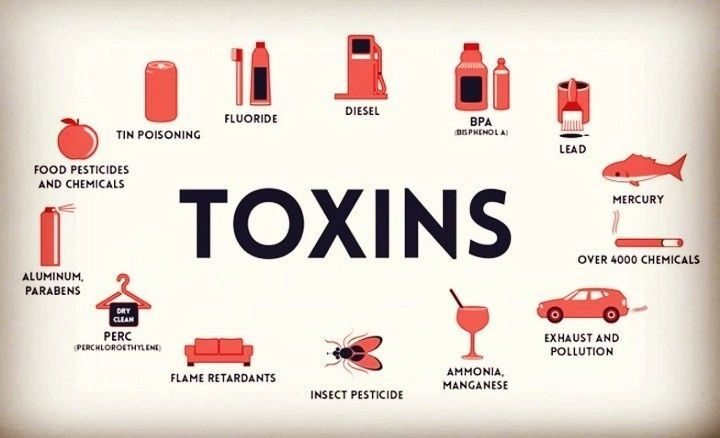
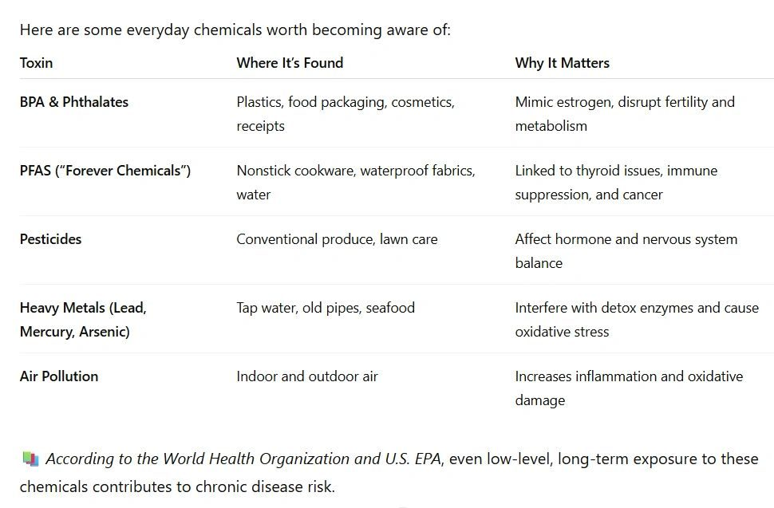

We’re exposed to toxins every day — from our food, air, environment, and skincare. Learn what toxins are, how they affect your hormones and health, and simple ways to reduce your exposure naturally.
What Are Toxins?
Toxins are harmful chemicals that can have a negative impact on our bodies over time.
They’re found everywhere — in the air we breathe, the food we eat, and the products we use daily. While our bodies are designed to detox naturally, modern life exposes us to thousands of synthetic chemicals that didn’t exist a century ago.
Common toxin sources include:
- 🚗 Air pollution from cars and factories
- 🥬 Pesticides on conventionally grown food
- 🧴 Plastic containers and packaging
- 🧼 Cleaning and beauty products
- 💧 Contaminated tap water
Even though we can’t see or smell most of them, these toxins can build up in the body and interfere with normal functions — especially our hormones.
How Toxins Affect the Body
When your body becomes overloaded with toxins, it can’t eliminate them efficiently. This puts extra pressure on your liver, gut, kidneys, and lymphatic system — the organs responsible for detoxification.
Over time, this can lead to:
- Fatigue or “sluggish” feeling
- Brain fog or mood changes
- Digestive issues and bloating
- Hormonal imbalances
- Skin breakouts or dull complexion
- Difficulty losing weight
Toxins also create oxidative stress, which damages cells and contributes to chronic inflammation — the root cause of many modern diseases.
📖 Research from the Endocrine Society (2019) found that certain chemicals, known as endocrine disruptors, can mimic or block hormones and alter metabolism, fertility, and thyroid function even in small doses.
What Is the Endocrine System?
Your endocrine system is your body’s hormone communication network — a collection of glands that send chemical messages throughout your body.
It includes:
- The pituitary (master control center)
- The thyroid (controls metabolism and energy)
- The adrenals (manage stress and cortisol)
- The pancreas (regulates blood sugar)
- The ovaries (which produce estrogen and progesterone)
Hormones control almost everything — from your mood and energy to your sleep, skin, and metabolism.
When toxins like BPA, phthalates, and PFAS mimic or block these hormones, the body gets confused. Your endocrine system struggles to stay balanced, which can show up as:
- Irregular periods or PMS
- Weight gain, especially around the midsection
- Low energy or fatigue
- Hair loss or acne
- Sleep problems or anxiety
These symptoms often go unnoticed or are blamed on “aging” — but they can actually be signs of toxin overload or hormonal disruption.

How to Reduce Your Exposure
The goal isn’t perfection — it’s progress. Every small step supports your body’s natural ability to detox.
Here are some simple ways to start:
💧 1. Choose Clean Water
Use a high-quality water filter to remove heavy metals, chlorine, and PFAS.
Bonus: drink plenty of water daily to flush toxins through your kidneys and lymphatic system.
🍽 2. Eat Real, Whole Foods
Choose organic when possible, or wash produce thoroughly to remove pesticides.
Focus on fiber-rich veggies, healthy fats, and antioxidant-rich foods like berries, greens, and olive oil.
🧴 3. Switch to Clean Products
Your skin absorbs much of what you put on it.
Look for fragrance-free, paraben-free, and phthalate-free beauty and cleaning products.
Tip: Apps like Think Dirty or EWG Skin Deep make it easy to check product safety.
🌬 4. Breathe Clean Air
Open your windows daily, use air purifiers, and avoid synthetic fragrances or aerosol sprays.
🧘♀️ 5. Support Natural Detox Pathways
- Move your body daily (supports lymphatic flow)
- Sweat through exercise or sauna sessions
- Get 7–9 hours of sleep for nightly detox repair
- Manage stress — cortisol overload can slow liver detoxification
The Bottom Line
You can’t avoid every toxin — and you don’t need to.
Your body is incredibly resilient and knows how to heal when given the right support.
By reducing your daily exposure and nourishing your detox systems through food, movement, and clean products, you’ll help your body do what it was designed to do: keep you balanced, energized, and glowing from the inside out.